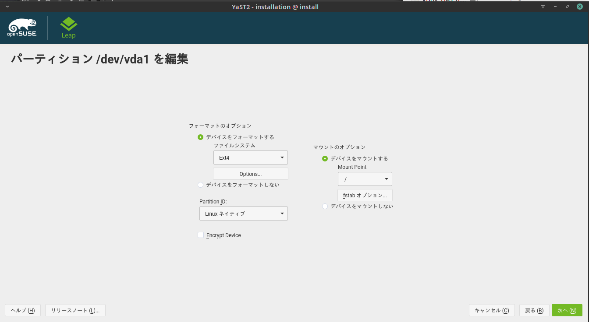

これまで、イタリアのaruba.itというところで月1EURのVPSを借りてopenSUSE Leap15を動かしていたのですが、そちらが年明けから月3EURに値上がりをしまして、月1EURじゃなければわざわざ遠いEUのサーバーを借りている理由もないということで引っ越しをしました
で、月1〜2ドルもしくは1〜2EURのサーバーを探しましたが、どうにも条件にマッチしたところがなく、だったら回線の速い国内VPSにすっかとなりまして、そういえばwebArenaが値下げして360円プランでもメモリ1Gのディスク20GBになってたなということで借りることにしました
が、こちらはOSテンプレートがCentOS6、7とUbuntu18.04しかないため、Ubuntu18.04を踏み台としてopenSUSE Leap 15をリモートインストールすることにしました
openSUSE Remote Installとは
openSUSEをインストールする方法としては、一般的な手法としてCDなりUSBメディアなりのインストールメディアから起動してインストーラを立ち上げる方法がありますが、その他に、grubからインストーラのvmlinuzとinitrdを起動してSSH経由でインストールするというリモートインストールという手法があり、公式wikiでも解説されています
なので今回はある意味その記事をなぞるだけの手抜き記事でもあります
踏み台OSのインストール
今回は踏み台OSとしてubuntu 18.04を使いますのでwebArenaのマニュアルに従ってインストールします。
マニュアルに従えば良いだけなので細かいところは割愛しますが、ubuntuの初期ユーザーと初期パスワードは相当マニュアルを熟読しないとわかりにくいところにありますので注意してください
webArenaのubuntuテンプレートはデフォルトで公開鍵認証のみで、パスワード認証はOFFになっていますが、今回リモートインストールのために一時的にパスワード認証を使いますので一度sshd_configを弄ってパスワードログイン有効にしてパスワードログインが可能であることを確認してください（インフラ側ファイアウォール等で塞がれていないことを確認のため）
インストーラの取得
/bootにインストーラのvmlinuzとinitrdを導入します
公式wikiに書かれているやり方でOKですが、download.opensuse.orgより理研のミラーの方が速いのでこちらを使います1
2sudo wget --output-document=/boot/vmlinuz.install http://ftp.riken.jp/Linux/opensuse/distribution/leap/15.0/repo/oss/boot/x86_64/loader/linux
sudo wget --output-document=/boot/initrd.install http://ftp.riken.jp/Linux/opensuse/distribution/leap/15.0/repo/oss/boot/x86_64/loader/initrd
ちなみに入れるのがLeap 15ではなくTumbleweedならばこう1
2sudo wget --output-document=/boot/vmlinuz.install http://ftp.riken.jp/Linux/opensuse/tumbleweed/repo/oss/boot/x86_64/loader/linux
sudo wget --output-document=/boot/initrd.install http://ftp.riken.jp/Linux/opensuse/tumbleweed/repo/oss/boot/x86_64/loader/initrd
IPアドレスの確認
1 | ip a |
でVPSのIPアドレスとネットマスクを、1
ip route show
でゲートウェイを確認しておきます
grubエントリーの追加
grubにインストーラを起動するメニュー項目を追加して、それをデフォルトにします
ubuntuの場合。/etc/grub.d/40_customにメニューエントリを追加します1
sudo vi /etc/grub.d/40_custom
1 | menuentry 'openSUSE install' { |
Tumbleweedならこう1
2
3
4
5
6menuentry 'openSUSE install' {
insmod gzio
set root='hd0,msdos1'
linux /boot/vmlinuz.install noapic usessh=1 sshpassword="[それなりに複雑なパスワード]" install=http://ftp.riken.jp/Linux/opensuse/tumbleweed/repo/oss hostip=[調べたIPアドレス] netmask=[調べたネットマスク] gateway=[調べたゲートウェイ] nameserver=1.1.1.1
initrd /boot/initrd.install
}
パスワードは単純なパスワードだとインストーラ起動時に弾かれて起動しなくなってしまうという罠がありますので、まあそのへんのネットサービス登録時にありがちな
- 8文字以上
- 大文字小文字数字記号を必ず混ぜる
あたりを守って設定してください
nameserverは、みんな大好きgoogle DNS(8.8.8.8)かcloudflareのDNS(1.1.1.1)を使えばOKです
メニューエントリを登録したら/etc/default/grubを弄ってデフォルトエントリーにします
grub2ではデフォルトエントリーの指定が番号ではなくて名前になっているので注意してください
1 | sudo vi /etc/default/grub |
1 | GRUB_DEFAULT="openSUSE install" |
ここまで編集したら
1 | sudo update-grub |
で編集内容を反映させてください
ここで設定を間違えるとVPSに接続不能になってしまい、踏み台OSのインストールからやり直しとなりますのでよーく確認してください
よく確認した後、vpsをリブートします
1 | sudo reboot |
VPSに接続
VPSをリブートしたら、VPSにX転送ありで接続すればインストーラが起動できます
Linuxデスクトップからの接続であれば1
ssh -X [vpsのIPアドレス]
で、windowsであればmovaxtermなりのX11ありのターミナルで接続します
この時以前に踏み台OSにSSH接続していたのであれば、当然SSHホストキーが変わっていますので、それ相応の処置が必要になりますので注意してください
openSUSEインストーラがデバイスを自動認識して、インストールのベースシステムをRAMディスクに展開するまでにそれなりの時間（4〜5分？)がかかりますのでなかなか繋がらないからと言って慌てないよう
先程設定したパスワードを入れてログインすると、以下のようなメッセージが出るはずです1
2
3
4
5
6
7
8Password:
openSUSE Leap 15.0 Installation
Run yast.ssh to start the installation.
/usr/bin/xauth: file /root/.Xauthority does not exist
0:install:~ #
指示の通り、yast,sshを実行すればいつものインストーラが立ち上がりますので
1 | # yast.ssh |
言語を日本語に設定してインストーラを開始します
概ねはインストーラに従ってインストールを進めればOKですが
パーティション設定だけはwebArenaのローカルルールに従っておいたほうが安全なので独自に設定を行います
「熟練者向けパーティション設定」＞「既存のパーティション設定を元にする」を選んでください

webArenaのVPSディスクにはVPSで使って良い20GBの領域と別に、10MBぐらいのVPSメタデータが入ったパーティションが存在しますので、これを壊さないように設定します
ディスクsda＞sda1＞「編集」を選びます
(スクリーンショットは検証用にローカル環境で建てたVMなのでデバイス名とパーティションサイズが微妙に異なりますがそのへんは読み替えてくださいねで)
/dev/sda1を「ext4でフォーマット」で「/にマウント」します

swapはインストール後にswapfileを作る方針で（元々のubuntuもswapfile式を使っています）
openSUSEらしくbtrfsでフォーマットしたいところですが、改めてwebarenaのテンプレートに戻す必要が出たときにトラブルの元になりそうなので日和りましたｗ
コンソール画面が使えないwebArenaの場合、snapperの恩恵もないですし
あとはお好みで設定しつつ、最終的にはこんな感じで
webarenaの場合、インフラ側でFWを設定する感じなので、openSUSE側のfirewallを切るのも手だと思います。
あるいはopenSUSE側でfirewallを受け持ってwebarena側のFWは素通し設定にしてしまうのもありかと思いますが、その場合openSUSE側でfirewall設定をしくじるとコンソール画面のないwebArenaではログイン不能になってしまうので、webArenaのFWに任せたほうが安全だと思います
（自分はopenSUSE側のFWを切ってます）
あとは普通にインストールが進みます
ftp.riken.jpを使っていれば１０分前後でしょうか
インストール後の設定
swapfileの設定
スワップが設定されていませんのでswapfileを設定します1
2
3
4$ free
total used free shared buff/cache available
Mem: 1003048 64628 741828 7060 196592 788252
Swap: 0 0 0
今回は1GBのswap用ファイルを作ります（増やしたければcountを増やしてください）1
2
3
4
5
6
7
8
9
10
11
12
13
14
15
16$ sudo dd if=/dev/zero of=/swapfile bs=1M count=1024
1073741824 bytes (1.1 GB, 1.0 GiB) copied, 0.926476 s, 1.2 GB/s
$ sudo chmod 600 /swapfile
$sudo mkswap /swapfile
スワップ空間バージョン 1 を設定します。サイズ = 1024 MiB (1073737728 バイト)
ラベルはありません, UUID=cc969dda-914d-4f42-a063-f391baaba9fa
$ sudo swapon /swapfile
$ free
total used free shared buff/cache available
Mem: 1003048 65060 62484 7060 875504 777376
Swap: 1048572 0 1048572
swapが効くことを確認したら/etc/fstabにswapマウントを追加します
1 | sudo vi /etc/fstab |
1 | /swapfile swap swap defaults 0 0 |
SSH認証方式の変更
デフォルトではSSHがパスワード認証になっていますので公開鍵認証に切り替えて、ポートもwell knownの22番から変更するのをおすすめします
あとはお好きに各種サーバーを設定してください
まとめ
openSUSEがサポートされていない各種VPSでも、sshで入ることができ、grubを弄ることができればopenSUSEはインストールできますので、ぜひ一度お試しください